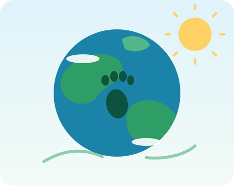

الوعي
فهم التغير المناخي ودور الأنشطة البشرية فيه، اعتمادًا على مصادر علمية موثوقة.

موقع تعليمي تفاعلي يساعدك على فهم التغير المناخي، وإدراك أثر عاداتك اليومية في الكهرباء والمياه والنقل، واكتشاف حلول عملية وتقنية لتقليل هذا الأثر.
تعلَّم كيف تؤثر عاداتك اليومية في المناخ، وجرّب أدوات بسيطة لتغيير سلوكك نحو الأفضل.
فهم التغير المناخي ودور الأنشطة البشرية فيه، اعتمادًا على مصادر علمية موثوقة.
ربط عاداتنا في الكهرباء والمياه والنقل بأثرها البيئي عبر مؤشر توعوي بسيط.
التعرف على حلول عملية وتقنية، وتنفيذ تحدٍّ بيئي صغير كل يوم.
الطقس هو حالة الجو في وقت ومكان محددين، أما المناخ فهو متوسط الطقس على مدى سنوات طويلة. يشير التغير المناخي إلى تحولات طويلة المدى في درجات الحرارة وأنماط الطقس. وتفيد الهيئات العلمية الدولية بأن الأنشطة البشرية، وفي مقدمتها حرق الوقود الأحفوري، هي المحرك الرئيسي لهذه التغيرات منذ القرن التاسع عشر.
المصادر: NASA Climate · الأمم المتحدة – العمل المناخي · IPCC
الروابط تحتاج إلى اتصال بالإنترنت، أما بقية الموقع فيعمل دون اتصال.
تنبيه: هذا مؤشر توعوي تقديري يعتمد على وصفك لعاداتك، وليس قياسًا علميًا لكمية الانبعاثات. لا يستخدم أرقامًا أو معادلات كربونية، وهدفه التفكير في العادات فقط.
اضغط على أي حل لتعرف فكرته وأثره وأمثلة عليه.
التحديات المنجزة على هذا الجهاز: 0